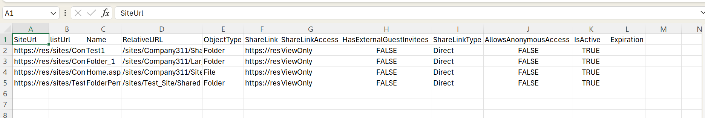

Get sharing links within the tenant
Summary
Effective oversight of sharing links is paramount to ensuring data security, compliance, and optimal collaboration experiences.
For Copilot for M365 implementations, ensuring there is no oversharing is a critical aspect of safeguarding sensitive information and maintaining regulatory compliance. By integrating the sharing link audit process into deployment strategies, administrators can preemptively address security vulnerabilities and uphold the integrity of M365 environments.

Prerequisites
- The user account that runs the script must have SharePoint Online tenant administrator access.
#Parameters
$tenantUrl = Read-Host -Prompt "Enter tenant collection URL";
$dateTime = (Get-Date).toString("dd-MM-yyyy-hh-ss")
$invocation = (Get-Variable MyInvocation).Value
$directorypath = Split-Path $invocation.MyCommand.Path
$fileName = "SharedLinks-" + $dateTime + ".csv"
$ReportOutput = $directorypath + "\Logs\"+ $fileName
#Connect to PnP Online
Connect-PnPOnline -Url $tenantUrl -Interactive
$global:Results = @();
function getSharingLink($_ctx,$_object,$_type,$_siteUrl,$_listUrl)
{
$SharingInfo = [Microsoft.SharePoint.Client.ObjectSharingInformation]::GetObjectSharingInformation($_ctx, $_object, $false, $false, $false, $true, $true, $true, $true)
$ctx.Load($SharingInfo)
$ctx.ExecuteQuery()
ForEach($ShareLink in $SharingInfo.SharingLinks)
{
If($ShareLink.Url)
{
If($ShareLink.IsEditLink)
{
$AccessType="Edit"
}
ElseIf($shareLink.IsReviewLink)
{
$AccessType="Review"
}
Else
{
$AccessType="ViewOnly"
}
#Collect the data
if($_type -eq "File")
{
$ObjectType = $item.FileSystemObjectType;
$Name = $Item.FieldValues["FileLeafRef"]
$RelativeURL = $Item.FieldValues["FileRef"]
}
else
{
$ObjectType = $_type;
$Name = "";
$RelativeURL = $listUrl ?? $SiteUrl;
}
$result = New-Object PSObject -property $([ordered]@{
SiteUrl = $SiteURL
listUrl = $listUrl
Name = $Name
RelativeURL = $RelativeURL
ObjectType = $ObjectType
ShareLink = $ShareLink.Url
ShareLinkAccess = $AccessType
HasExternalGuestInvitees = $ShareLink.HasExternalGuestInvitees
ShareLinkType = $ShareLink.LinkKind
AllowsAnonymousAccess = $ShareLink.AllowsAnonymousAccess
IsActive = $ShareLink.IsActive
Expiration = $ShareLink.Expiration
})
$global:Results +=$result;
}
}
}
#Exclude certain libraries
$ExcludedLists = @("Form Templates", "Preservation Hold Library", "Site Assets", "Images", "Pages", "Settings", "Videos","Timesheet"
"Site Collection Documents", "Site Collection Images", "Style Library", "AppPages", "Apps for SharePoint", "Apps for Office")
$m365Sites = Get-PnPTenantSite| Where-Object { ( $_.Url -like '*/sites/*') -and $_.Template -ne 'RedirectSite#0' }
$m365Sites | ForEach-Object {
$siteUrl = $_.Url;
Connect-PnPOnline -Url $siteUrl -Interactive
$ctx = Get-PnPContext
$web= Get-PnPWeb
Write-Host "Processing site $siteUrl" -Foregroundcolor "Red";
#getSharingLink $ctx $web "site" $siteUrl "";
$ll = Get-PnPList -Includes BaseType, Hidden, Title,HasUniqueRoleAssignments,RootFolder | Where-Object {$_.Hidden -eq $False -and $_.Title -notin $ExcludedLists } #$_.BaseType -eq "DocumentLibrary"
Write-Host "Number of lists $($ll.Count)";
foreach($list in $ll)
{
$listUrl = $list.RootFolder.ServerRelativeUrl;
#Get all list items in batches
$ListItems = Get-PnPListItem -List $list -PageSize 2000
# getSharingLink $ctx $list "list/library" $siteUrl $listUrl;
#Iterate through each list item
ForEach($item in $ListItems)
{
$ItemCount = $ListItems.Count
#Check if the Item has unique permissions
$HasUniquePermissions = Get-PnPProperty -ClientObject $Item -Property "HasUniqueRoleAssignments"
If($HasUniquePermissions)
{
#Get Shared Links
if($list.BaseType -eq "DocumentLibrary")
{
$type= "File";
}
else
{
$type= "Item";
}
getSharingLink $ctx $item $type $siteUrl $listUrl;
}
}
}
}
$global:Results | Export-CSV $ReportOutput -NoTypeInformation
Write-host -f Green "Sharing Links Report Generated Successfully!"
Check out the PnP PowerShell to learn more at: https://aka.ms/pnp/powershell
Source Credit
Sample first appeared on Oversight of Sharing Links in SharePoint sites using PowerShell
Contributors
| Author(s) |
|---|
| Reshmee Auckloo |
Disclaimer
THESE SAMPLES ARE PROVIDED AS IS WITHOUT WARRANTY OF ANY KIND, EITHER EXPRESS OR IMPLIED, INCLUDING ANY IMPLIED WARRANTIES OF FITNESS FOR A PARTICULAR PURPOSE, MERCHANTABILITY, OR NON-INFRINGEMENT.